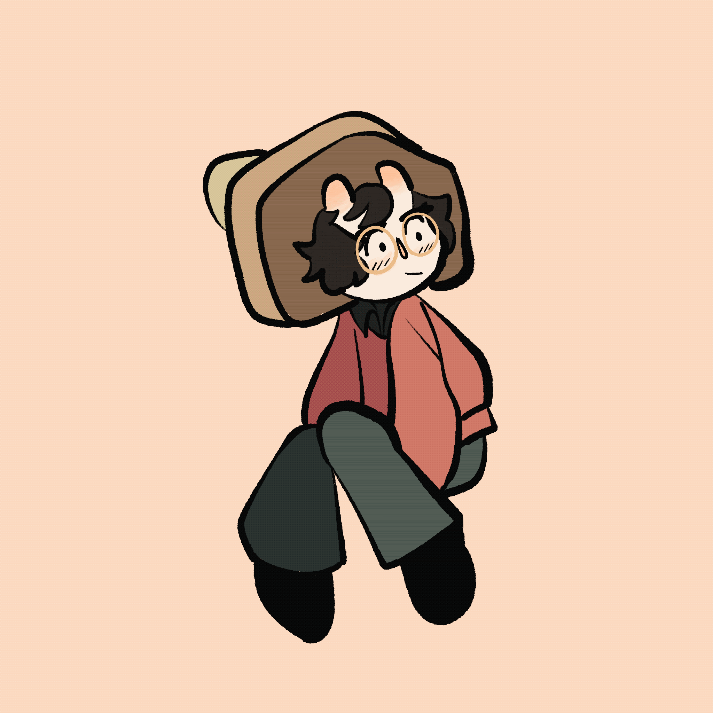
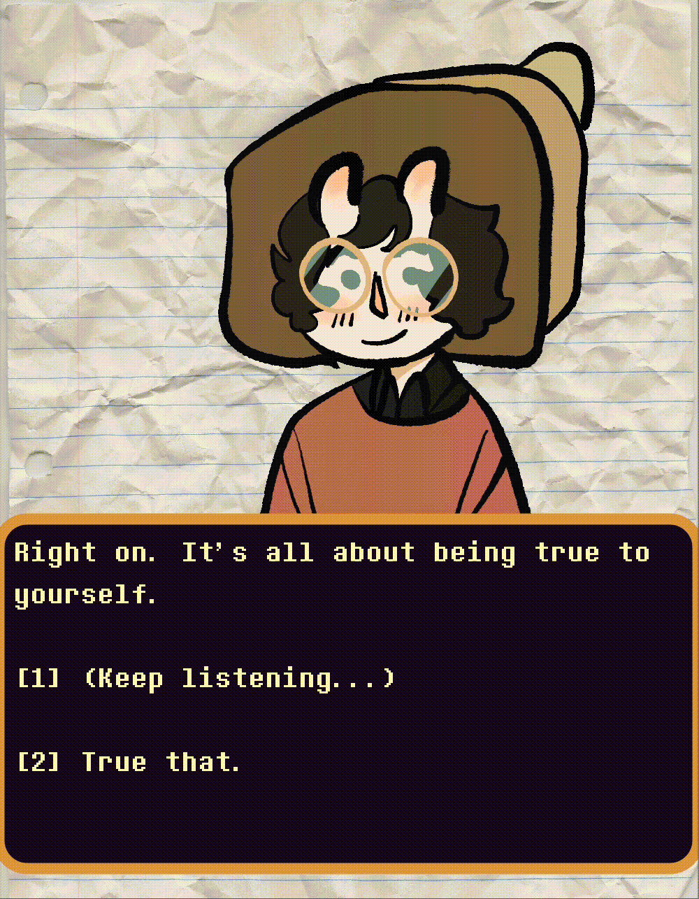

A small visual novel about snails, shells, and being true to yourself.
The beginning of something bigger.
- BGM by (joshuuu) - SFX by (noahkuehne) - Determination Mono Web by (Abacadaba) - P5.js library - Procreate

